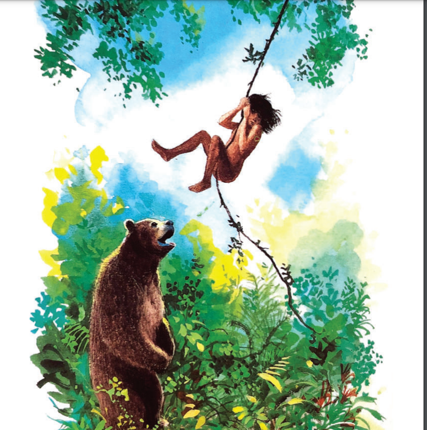

One hot evening in the hills of south India, the moon is big in the sky. Father Wolf is sleeping in his cave with Mother Wolf and their four cubs. He wakes up and says, “It’s time to hunt1 again.” “Hello!” says a voice. It is the jackal Tabaqui. Wolves do not like jackals; they are afraid of2 them because they are dirty, always angry and they eat the rubbish near the villages, too. They also tell lies3 and create problems for the other animals. “Tabaqui! Why are you here?” asks Father Wolf. “Good morning, chief of the wolves, have you got something for me to eat?” “There’s nothing here for you,” Father Wolf answers. Looking at the cubs, Tabaqui says, “Your children are so beautiful!” but this is not a good thing to say. In India, people and animals believe it is unlucky4 to tell children they’re beautiful in front of them. “Shere Khan the tiger is coming here to hunt,” says Tabaqui. “What? He can’t do that. He must respect the Law of the Jungle, he must tell us first,” says Father Wolf, surprised.
“Shere Khan wants to hunt food in new territory because the people of the village are angry at him. His leg is bad, and he can’t run fast so he can only kill bulls,” says Mother Wolf. Tabaqui leaves, and soon after Mother Wolf says, “The woods! Listen! It’s his voice… you can hear Shere Khan!” Father Wolf listens and says, “Shere Khan is not a clever animal! He’s making a lot of noise. All the animals are running away and hiding5 in the jungle. I can’t look around for food now!” “Shut up, listen! There’s a noise…” says Mother Wolf. Father Wolf is ready to jump to defend his family, but Mother Wolf says, “It’s the noise of… a man!” “What…? A man?” shouts Father Wolf. The Law of the Jungle says that animals must not kill men because many men with guns can come to the jungle and then all the animals are in danger. “Look!” says Mother Wolf. “Someone’s coming near the cave. Be careful!” Father Wolf sees a baby in front of him under the leaves of a tree. The baby is chubby and brown. He has no hair and clothes. He can’t walk very well. The small baby looks at Father Wolf and laughs. “What’s that? Is that a man cub?” says Mother Wolf curiously. “I want to look at it, bring it here, please.” Father Wolf carries it to Mother Wolf carefully. The baby starts drinking her milk with the other cubs. Mother Wolf says happily, “He’s not afraid, look! He’s drinking my milk with our cubs.”
Shere Khan arrives and puts his big head inside the cave. It is immediately dark. Tabaqui is with him. “We’re really pleased to see you, Shere Khan. What do you want?” says Father Wolf with his angry eyes. “I want the man cub, it’s mine! Give it to me!” ‘Shere Khan can’t fight… he can’t enter the cave because he’s too big’, thinks Father Wolf. “The man cub is ours and you have no right to have him,” says Father Wolf. “Wolves obey10 the leader of the pack11… He can decide what to do with the cub, not you.” Shere Khan starts roaring12 and his eyes are very angry. “The man cub is mine!” repeats Shere Khan and his voice is like thunder13 in the cave. “His parents and men are afraid of me, and they run off14 when they see me! Now I can eat the child!” Raksha, Mother Wolf, quickly jumps in front of Shere Khan to defend her cubs and shouts, “No! He’s my son! The man cub is mine and you can’t kill him! Go away!”
Father Wolf is really surprised at Mother Wolf’s reaction, but then he remembers that Raksha was very strong and brave15 when she was young; her nickname16 was “The Demon”. Shere Khan goes away because he knows he can’t fight Mother Wolf in the cave. “One day that cub will be mine… the pack must decide for him…” he says, angry. “He’s right,” says Father Wolf when Shere Khan leaves. “We must show the man cub to the pack on the next full moon. Do you really want to keep17 him? Are you sure?” he then asks looking at Mother Wolf. “Yes, I do. I’m sure! Look, he is happy here, he is well with us. I want to call him Mowgli the frog.” The Law of the Jungle says that the pack must see all the wolf cubs when they can walk during the pack council18, then the cubs are free to go where they want. All the wolves meet for the council once a month at full moon. They look at all the wolf cubs carefully so that they can recognise them. The Law of the Jungle also says that an adult wolf can’t kill a wolf cub before the wolf cub kills a deer19. The punishment is death. After some time, when their four cubs can walk, Father Wolf and Mother Wolf take them and Mowgli to the Council Rock20 – a high hill with big stones where all the wolves meet. Akela, the leader of the pack, is sitting on a big rock. He is a grey wolf, strong and brave. He lives alone. Many wolves of different ages are around him and all the wolf cubs are in front of him inside the circle of their parents. For each wolf cub Akela says, “Look carefully, wolves! You know the Law of the Jungle. Look carefully!”
Finally, Father Wolf pushes21 Mowgli in front of Akela and the other wolves and says, “This is Mowgli, the frog.” Mowgli, in the centre of the circle, is laughing and playing with some little stones. Akela repeats the same sentence, “Look, wolves, look carefully,” but suddenly the wolves hear Shere Khan’s voice behind the hill. “The man cub is mine! Give him to me!” he shouts. Akela does not move and says, “Look carefully! Who speaks for this man cub? Two voices must speak for him, but not his father and mother.” A big, brown, sleepy22 bear appears in front of Akela. “Baloo!” says Akela with surprise. Baloo teaches the Law of the Jungle to wolf cubs and can speak at the meetings of the Council. Everyone likes him because he doesn’t hunt, and eats only roots23, honey and nuts. “I speak for the man cub… I can teach him the Law of the Jungle with the other wolf cubs…” says Baloo with his low voice. “Very well,” says Akela, “but it’s not enough… another animal must speak for the man cub. Who speaks for Mowgli?” A black shadow24 jumps down into the circle. It is Bagheera, the black panther. He is brave, strong and clever. “Akela, can I speak?” asks Bagheera gently25 . “Yes, you can,” answers Akela.
“The Law of the Jungle says that it is possible to buy the life of a cub. I can give you a fat bull26 to eat. Don’t kill the man cub, he can’t hurt27 you. Let28 him live!” says Bagheera. “Very good,” says Akela. “Look carefully, wolves! Look carefully!” All the wolves walk in a circle around Mowgli and look at him carefully. Then they go down the hill to take the bull because they are very hungry. Only Akela, Baloo, Bagheera and Mowgli’s family are at the Council Rock, and they can hear Shere Khan roaring angrily in the night under the full moon.
“I’m very happy. Men and their cubs are clever,” says Akela. “One day this man cub can help us. Now take him away with you all and teach him everything he must know.” Thanks to Baloo’s good words and Bagheera’s fat bull, Mowgli is now a member of the Seeonee Wolf Pack. He can grow up29 in the wolf family and learn the meaning of all the things in the jungle. Baloo and Bagheera are very good teachers. Bagheera teaches Mowgli that he must never kill bulls even when there is nothing to eat because Bagheera’s bull saved his life. Mowgli also learns to climb30 trees, swim in the river and hunt for his food. When he is not learning, he sits in the sun and sleeps. Sometimes, at night, he leaves the forest and goes to the village, but he does not trust31 men because they catch animals and put them in square boxes. He takes his place at the Council Pack meetings, too. He is a very happy boy and grows up quickly.